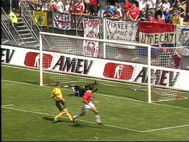
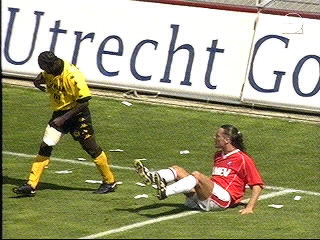
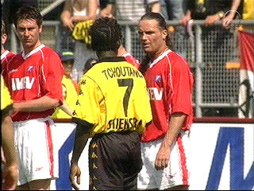
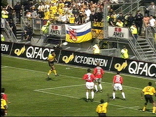
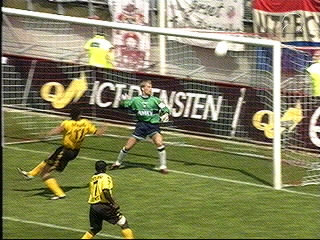
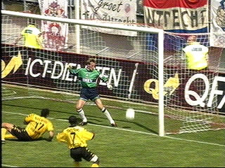
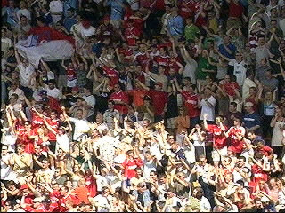
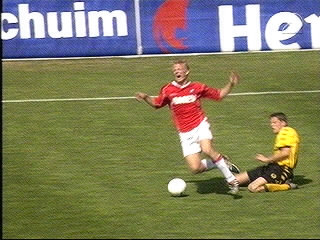
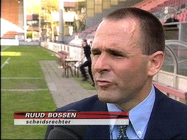
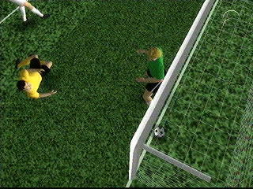

|
FC Utrecht - Roda JC 3-0 13 mei 2001 |

Kuyt scoort 1-0 in de 34e minuut.

Tchoutang had heel wat te stellen met Vreven.

Heeeeel wat!

Links de Rodasupporters die zien hoe Anastasiou
de bal doorkopt naar Nygaard welke scoort! Het
doelpunt wordt echter afgekeurd.

Hier is te zien hoe de bal via de lat....

...naar beneden stuitert en over de lijn gaat.

Daarna werd het nog 2-0 en 3-0 waardoor de
uitverkochte Galgenwaard feest vierde.

Tomasic scoort een gele kaart waardoor hij evenals
Van der Luer die ook geel kreeg, de wedstrijd
tegen NEC geschorst is.

Hij pleit voor technische hulpmiddelen.

Mart Smeets liet met zijn animatie-speeltje zien
dat de bal niet 100% over de lijn was. Geen goal
dus, volgens meneer Smeets....
©KPD